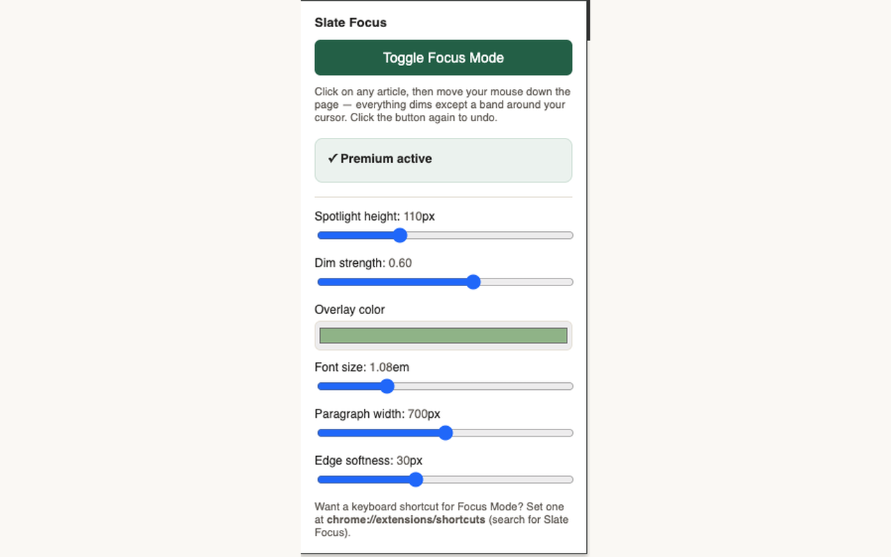

A reading ruler and focus mode for any web page.

Click the toolbar icon — or set your own keyboard shortcut — and everything on the page dims except a soft band that follows your mouse, so your eyes stay locked on what you're reading instead of drifting across a wall of text.
Toggling Focus Mode is always free. Premium unlocks full customization for $5, one-time — no subscription.